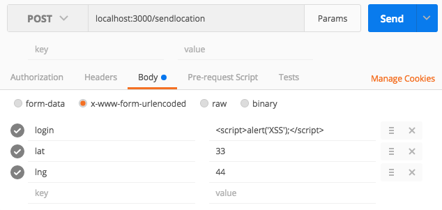
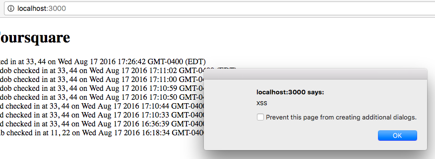
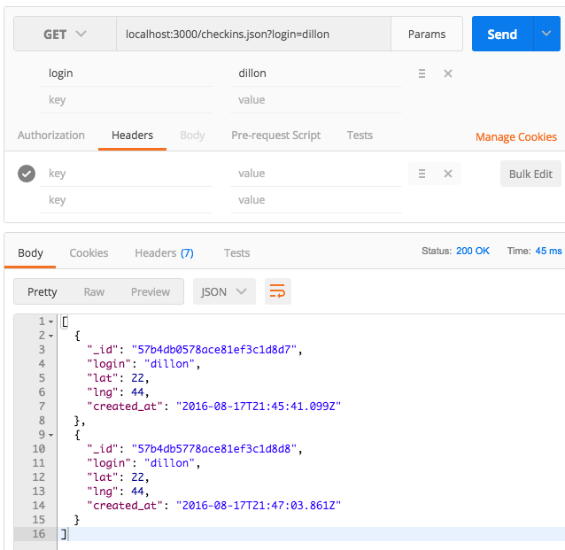

Introduction
server-vuln.js is a server built on a node.js environment using the Express framework and MongoDB for persistent storage. It establishes three only routes:
POST /sendLocation
GET /checkins.json
GET /
When posting to /sendLocation, the client must include a login (string), lat (number) and lng (number). As this data is pushed to the DB, any other client can see the data (sorted by object ID) on '/'. If a query is passed with a login string to /checkins.json, the raw data of checkins for only that username will be returned.
Methodology
First, I refactored the JavaScript for readability -- some styling did not conform to best practices. No functionality or logic was altered in any way. I also tested the program for non-security related bugs, and none were found.
Postman (www.getpostman.com) was used in place of cURL in order to test routes directly with raw data. Postman can handle any HTTP verb on any localhost route via a desktop GUI that makes it really easy to specify key-values for both queries and bodies.
Burp Suite was also used for scanning.
(Of course, console logging was the most invaluable tool for determining data manipulation logic).
Abstract of Findings
Numerous vulnerabilities have been found, ranging from low to high severity levels.
At the lowest level: you are sending too much data to your users, such as an "Object ID," which usually is better off hidden. This will really only be a significant problem later if you will start storing more sensitive data in your database, which from the looks of it, seems likely that you will want to do at some point later in productio).
The biggest security threat to your app right now is an
"XSS" vulnerability. You are allowing hackers to send malicious code to your server, allowing them to play tricks on other users.
Finally, you are enabling website of other origins to access sensitive data on your own server, which generally is not recommended. I advise that if you do this, you make a list of "trusted origins" which you can grant permission to. Details of how to do this can be found below. This issue is ranked as a medium severity level because it is an indirect means by which hackers are more easily able to engage in the XSS that I describe above.
Issues found
Issue
Enabling CORS
Location
Line 18, 19 in server-vuln.js
Severity
Medium
Description
In /sendLocation header:
For Access-Control-Allow-Origin: *
Access-Control-Allow-Headers: X-Requsted-With
In other words, the browser is told that any and all origins can access the contents
This is marked as a medium severity level because it is not a direct vulnerability; it simply makes other vulnerabilities such as XSS more easily attackable.
Resolution
Option #1: Simply remove both lines 18 and 19 entirely and the browser will default to origin-only access. You can still take user input from a client-side form that can POST data from users via ajax.
Option #2: If there are specific (trustworthy) origins that you need to be able to POST data in the /sendLocation port, then make a list of "trusted origins" and specify those as the only ones who have CORS privelages -- never use the wildcard ('*').
Issue
Cross-Site Scripting
Location
POST /sendLocation route.
Severity
Very high
Description
Data that is received via the /sendLocation route is not sanitized, allowing a predator to inject malicious JavaScript
Proof of vulnerability
The following body was sent to /sendLocation via Postman:

Then, upon loading '/' locally:

Given this ability, predators can also redirect a user to a site for phising, further malicious injecting, etc. They can even redirect the user back to the real site again so that the attack can occur unbeknownst to them.
Resolution
Sanitize data coming from /sendLocation. Validation can occur as early as line 18. The validation should be vigilant of the "<script>" tag, indicating an attempt to embed JavaScript into HTML. One option would be to convert "<" into an escape character that HTML will render, so that your users can still use the "<" and ">" characters in their usernames.
Issue
Insecure Direct Object Reference
Location
Line 73 (/checkins.json route)
Severity
Low
Description
The /checkins.json route provides clients with a very direct method of querying the DB. Data is returned as a JSON object (as if it was returned from the actual MongoDB shell). Unfortunately, this includes the Object ID (_id) which in most cases is conventially hidden from the end user. Even if you determine the Object ID is harmlessly shared, it would be prudent to protect this in case later, you decide to store more (private) information in each document as elements of the object, for example:
See here
Copied from above:
By crawling your website, one could:
- find about some hidden objects: for instance, if the counter part goes from 0x....b1 to 0x....b9 between times t1 and t2, one can guess ObjectIds within these invervals. However, guessing ids is most likely useless if you enforce access permissions
- know the signup date of each user (not very sensitive info but better than nothing)
- deduce actual (as opposed to publicly available) business hours from the timestamps of objects created by the staff
- deduce in which timezones your audience lives from the timestamps of user-generated objects: if your website is one which people use mostly at lunchtime, then one could measure peaks of ObjectIds and deduce that a peak at 8 PM UTC means the audience was on the US West coast
- and more generally, by crawling most of your website, one can build a timeline of the success of your service, having for any given time knowledge of: your user count, levels of user engagement, how many servers you've got, how often your servers are restarted. PID changes occurring on weekends are more likely crashes, whereas those on business days are more likely crashes + software revisions
and probably find other info specific to your business processes and domain
To be fair, even with random ids one can infer a lot. The main issue is that you need to prevent anyone from scraping a statistically significant part of your site. But if someone is determined, they'll succeed eventually, which is why providing them with all of this extra, timestamped info seems wrong.
NOTE: A lot of user data seems to already be made publically available by your app's homepage, so some of these points might not be of particular risk. Nonetheless, you would be better off keeping object IDs private
Proof of vulnerability

Resolution
On line 73, add something like the following pseudo:
1. arr = new array
2. for each object i in results
3. obj = new object
4. obj.foo = i.foo
5. ... //do the same for each element that you DO want to share publically
6. arr.push(obj)
7. response.send(arr)
Conclusion
In conclusion, only one vulnerability was found that could directly harm users. All vulnerabilties found could be easily fixed via improved data validation. Other than validation, no significant logic errors or bugs were found in the source code, although some changes will still be necessary to make it production level. For more proof of how dangerous XSS can be alone, visit: vulnerableapp.herokuapp.com.